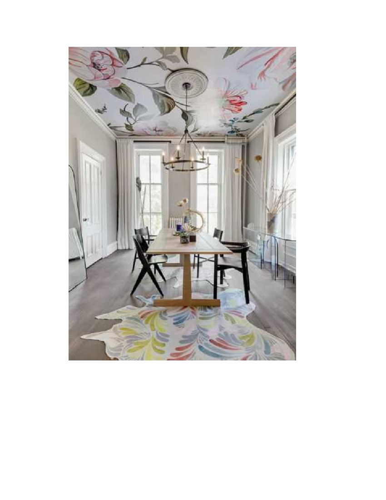

“FALSE CEILING DESIGNS TO AMP YOUR DESIGN GAME”
Do not miss this all-inclusive ceiling design guide compiled for you to ace the interior design
game.
False ceiling ideas:
False ceiling with inside coves
False ceiling with wall-facing coves
Coffered false ceiling
Tray false ceiling
Tray false ceiling with a recessed groove
POP rafters in the ceiling
Wallpapers on the false ceiling
Wooden ceiling
Glass false ceiling
A ceiling is the most enthralling aspect of any interior design. An aesthetic ceiling can
completely transform an otherwise boring room with its powerful ambience. False ceilings are
the new trendsetters. False ceilings are secondary ceilings that are under the primary ceiling.
Customers these days prefer false ceilings over traditional ones. False ceilings create a
decadent and captivating living space. A beautiful ceiling balances all uneven aspects of interior
design. It brightens up the space and adds a positive verve to any room especially when infused
with the right kind of lighting.
These days, people take a lot of pride in styling their homes, they want everything to be perfect.
With so many ceiling designs, we often get confused while choosing the right one. But worry
not, continue reading this insightful article to know more about trendy ceiling designs and how to
choose the best one for your room:
False ceiling with Inside coves:
This is one of the most-loved ceiling designs. You cannot go wrong with this ceiling
design. It is safe and future-proof. If you incorporate the right lighting, it will make the
room appear longer. This design looks good in every room whether it is your living room
or your bathroom.
False ceiling with wall-facing coves:
Side lighting is the most classic false ceiling feature. This design looks sleek, ultra-
stylish, and rich. You can get LED lights installed in this design. It makes the room glow
along with a beautiful ambiance. It makes sure that the glare from the lights is reduced
but the lighting is still sufficient.
Coffered false ceiling:
This type of ceiling is uncomplicated yet decadent. It can be customized in several
different patterns. You can stick to simple geometrical figures or think out of the box and
infuse new shapes, and patterns into it. It is nothing extraordinary but adds exuberance
to any room.
Tray false ceiling:
The tray false ceiling is an evergreen kind of ceiling design. It is extremely popular for its
easy installation. It gives a modern and stylish aura to your living space. It makes use of
recessed LED lighting techniques. Even if you have a simple theme, this false ceiling will
skyrocket the visual appeal of your room. The regality it offers remains unmatched.
Tray false ceiling with recessed groove:
This is the other variation of the basic tray false ceiling design. It has a recessed lighting
pattern. If you are someone who loves bright interiors, this is the best choice for you.
This ceiling design has a lot of grooves which create room for more lights, hence, more
brightness. You can get LED lights installed in these recessed depressions.
POP rafters in the ceiling:
We all have seen wooden rafters embedded into the ceiling. But have you ever heard
about POP rafters? POP rafters look extremely sleek and sophisticated. The warm
lighting filtering through recessed gaps floods your room with cozy exuberance.
Wallpapers on the false ceiling:

Ever fantasized about having a ceiling plastered with renaissance paintings? If yes, then
this is the choice for you. It is extremely easy to execute. Such ceilings give your room a
rich character. You can choose a fancy wallpaper and get it installed. You can scatter
beams of light throughout the room and witness the magic unfold. These ceilings are
extremely economical and easy on the pocket.
Wooden Ceiling:

Glass false ceilings are for those who want to take their ceiling game a notch higher.
These ceilings look out of the world when paired with wood panels. You can get
spotlights installed inside them, when the light infiltrates the glass, your living space will
be bathed in a warm, captivating glow.
So this was an exhaustive list of different types of false ceilings that one can execute in a home.
Each one is unique and beautiful. So just go for these, today a false ceiling is becoming more of
a necessity than a luxury due to its numerous advantages.